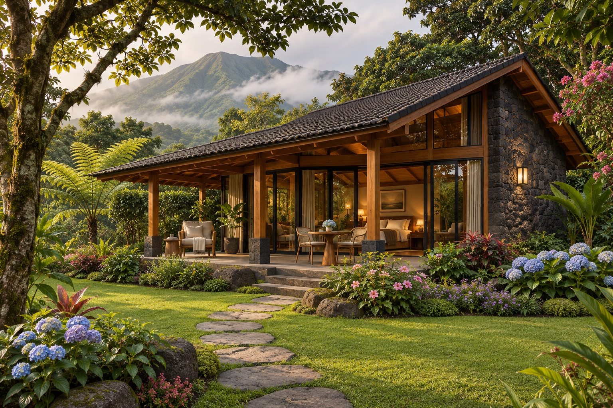
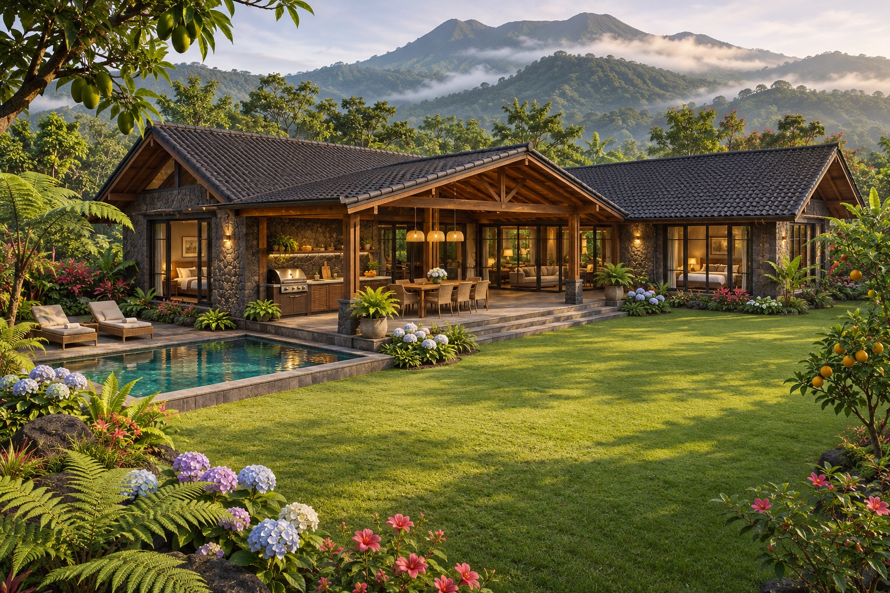

The expanded lodge collection
Four tiers.
More ways to belong.
From a quiet garden retreat to an expansive private estate.
Discover moreSpace, comfort and possibilities
Find your scale
of mountain living.
Retreat, Family, Reserve and Estate explore different levels of space and amenity within the Mount Paradise style. Each keeps natural stone, warm timber and a private garden at its heart. These are proposed design tiers; pricing, dimensions and final specifications are yet to be established.
Explore the four tiers
Tier 1 / Retreat
Fern Retreat
An intimate retreat for a couple or solo stays

Small footprint.
A lovely private world.
An intimate lodge for quiet escapes. A simple pitched roof shelters an open veranda, while stone walls and abundant planting give the home a grounded, secluded character.
- Architecture
- Compact single-storey lodge
- Private yard
- Private lawn and a layered fern garden
- Water
- Garden living without a pool in this concept
- Gathering outdoors
- A sheltered table for two and a reading corner
Tier 2 / Family
Orchard Family Lodge
A family base with space to host friends

A garden at
the heart of home.
Two low wings embrace an open lawn, keeping the garden central to family life. A covered dining terrace sits between the living spaces, with a pool to one side and fruit trees along the borders.
- Architecture
- Low courtyard arrangement with connected rooflines
- Private yard
- Broad courtyard lawn framed by fruit trees
- Water
- A compact private swimming pool
- Gathering outdoors
- Dedicated BBQ grill, preparation counter and covered dining for six
Tier 3 / Reserve
Ridge Reserve
A larger home for extended stays and generous entertaining

More room
for the view.
A tall glazed gable and a lower stone wing create a more expressive mountain home. An upper balcony overlooks the grounds, while the main terrace opens to a generous lawn and a long pool facing the landscape.
- Architecture
- Split-level residence with a tall gable and upper balcony
- Private yard
- Generous landscaped yard with distinct lounging and lawn areas
- Water
- An elongated pool along the view terrace
- Gathering outdoors
- Covered outdoor kitchen with a built-in BBQ grill and dining for eight
Tier 4 / Estate
Paradise Estate
A flagship retreat for family gatherings and hosting
Bring everyone.
There is room.
A private estate conceived around gathering, with substantial residential wings and a shared living hall. The grounds become a sequence of outdoor rooms: a broad lawn, a pool terrace, a dining space and a separate fire lounge.
- Architecture
- Multiple connected residential wings with varied roof heights
- Private yard
- Expansive private grounds with a large usable lawn and mature planting
- Water
- A long private pool with space to relax alongside
- Gathering outdoors
- Full outdoor kitchen with BBQ grill, dining for twelve and a separate fire lounge
The collection at a glance
How the tiers differ.
| Tier | Private garden | Pool | Outdoor dining |
|---|---|---|---|
| Fern Retreat | Private lawn and a layered fern garden | Garden living without a pool in this concept | A sheltered table for two and a reading corner |
| Orchard Family Lodge | Broad courtyard lawn framed by fruit trees | A compact private swimming pool | Dedicated BBQ grill, preparation counter and covered dining for six |
| Ridge Reserve | Generous landscaped yard with distinct lounging and lawn areas | An elongated pool along the view terrace | Covered outdoor kitchen with a built-in BBQ grill and dining for eight |
| Paradise Estate | Expansive private grounds with a large usable lawn and mature planting | A long private pool with space to relax alongside | Full outdoor kitchen with BBQ grill, dining for twelve and a separate fire lounge |
Design concepts for discussion. Final room counts, areas, layouts and amenities will depend on detailed design and individual sites.
One collection.
Many expressions.
The original Garden, Vista and Forest styles remain part of the collection. Explore them alongside these new tiers to find the materials, proportions and outdoor spaces that appeal to you.
Return to the original lodge styles